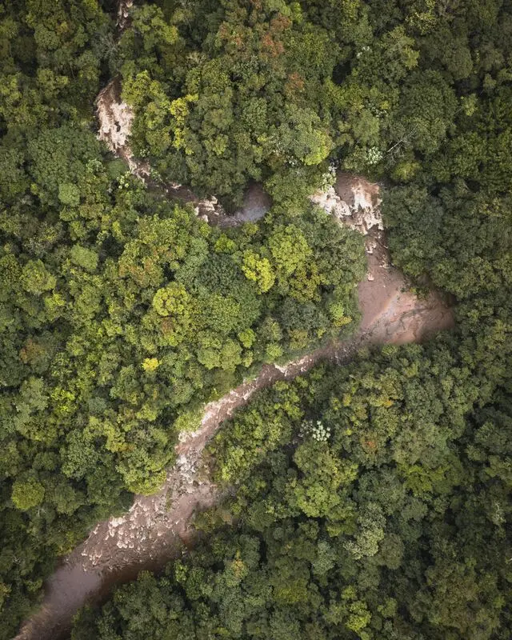

Dados
- Área:
- 8.515.767 km²
- População:
- 203.080.756
- Capital:
- Brasília
- Idioma:
- Português
- Moeda:
- Real (BRL)
- Fuso horário:
- UTC-3
- Código de chamada:
- +55
- Domínio de internet:
- .br
Clima
- Temperatura:
- 28 °C
- Condições:
- Parcialmente nublado
- Vento:
- 5 km/h
- Sensação térmica: